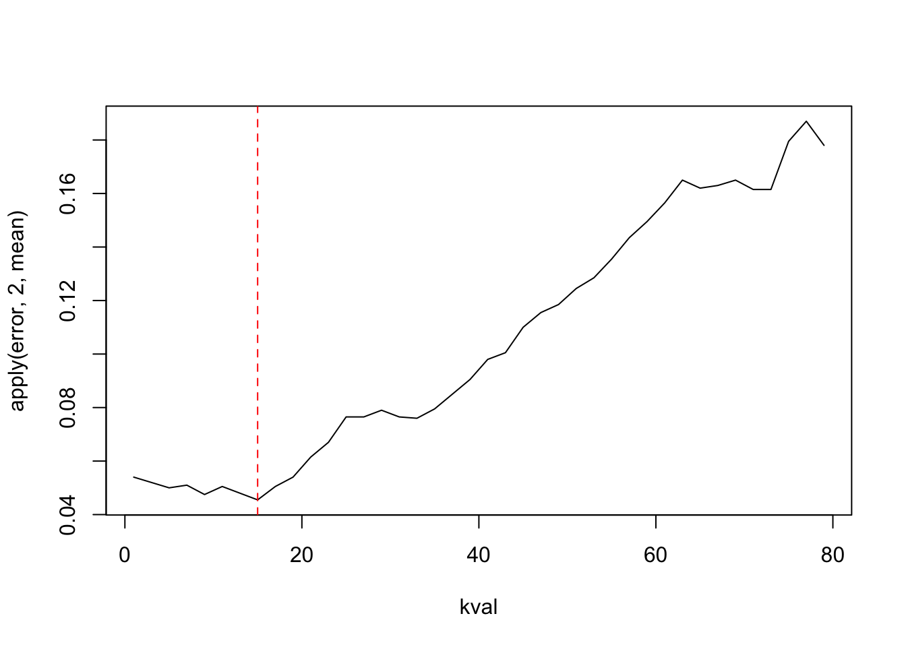
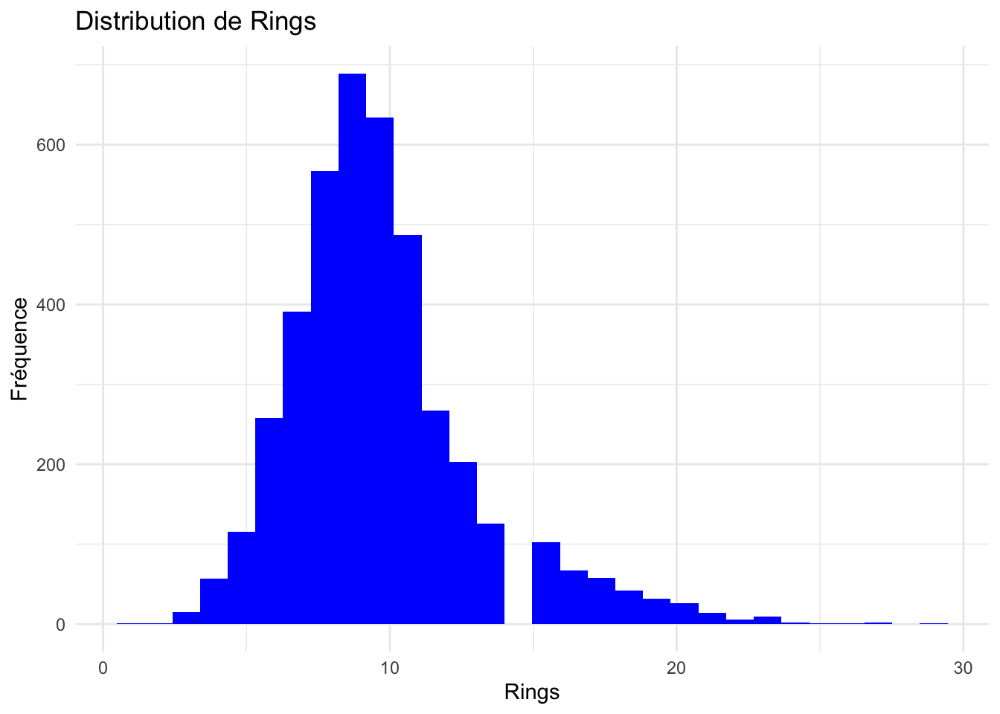
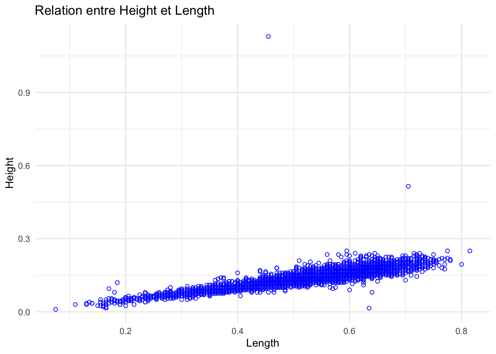
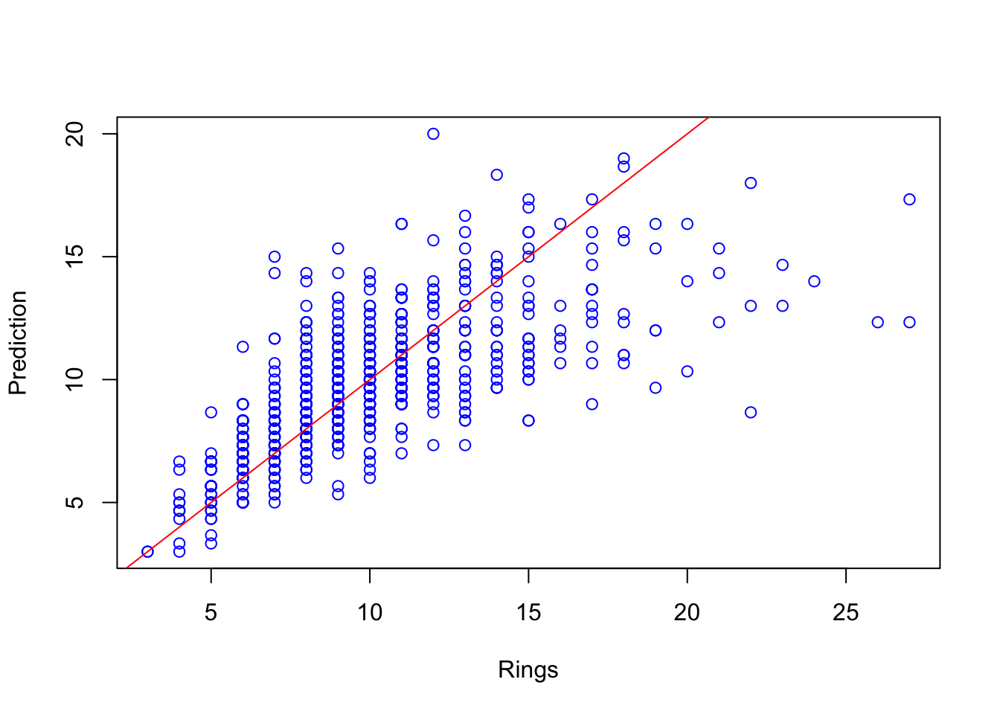
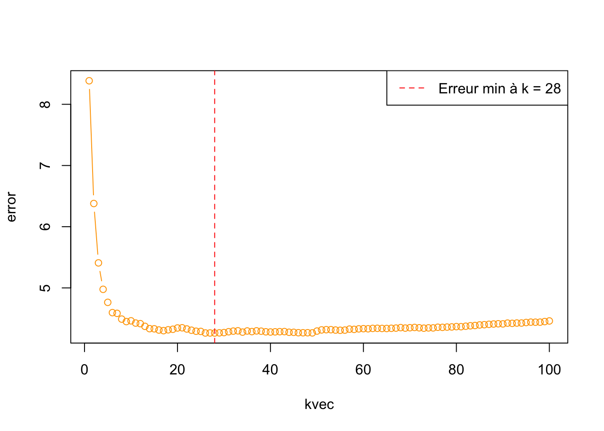

# Import library ---------------
library(class)L’algorithme des \(k\) plus proches voisins
R
Machine learning
Application sur R de l’algorithme des \(k\) plus proches voisins.

1 Introduction
Le but de l’apprentissage supervisé est de prévoir l’étiquette (classification) \(Y\) ou la valeur de \(Y\) (régression) associée à une nouvelle entrée \(X\), où il est sous-entendu que (\(X,Y\)) est une nouvelle réalisation des données, indépendante de l’échantillon observé.
L’algorithme des \(k\) plus proches voisins est une méthode d’apprentissage supervisé. On peut l’utiliser pour classifier quand \(Y_i\) est une variable qualitative, les \(Y_i\) sont appelés étiquettes. On peut également l’utiliser pour prédire si \(Y_i \in \mathbb{R}\). C’est donc une régression et les \(Y_i\) sont appelés variables à expliquer.
Remarque : On parle d’apprentissage supervisé car pour chaque \(X_i\) de l’échantillon d’apprentissage on dispose de \(Y_i\), l’étiquette. Au contraire, on parlera d’apprentissage non-supervisé lorsque l’échantillon est simplement constitué des \(X_i\).
2 Méthode
En Classification, pour un nouveau \(X\) on classifie son étiquette \(Y\) par la méthode des k-plus proches voisins de la façon suivante. On détermine tout d’abord les \(k\) plus proches \(X_i\) de l’échantillon par rapport à \(X\) et on attribue la modalité dominante parmi les k modalités observées (on parle de vote majoritaire).
En Régression, pour un nouveau \(X\) on prédit la valeur \(Y\) par la méthode des k-plus proches voisins de la façon suivante. On détermine tout d’abord les \(k\) plus proches \(X_i\) de l’échantillon par rapport à \(X\) et on calcule la moyenne des \(Y_i\).
Remarque : Pour déterminer les \(k\) plus proches \(X_i\) de \(X\) on utilise généralement la distance euclidienne. Il est possible de pondérer différement certaines composantes de \(X_i\) pour lesquelles on veut attribuer plus ou moins d’importance.
Nous allons mettre en pratique ces deux méthodes à travers deux exemples.
3 Classification
Nous allons utiliser le jeu de données Iris. Également connu sous le nom d’Iris de Fisher. C’est un jeu de données multivariées présenté en 1936 par Ronald Fisher. Il comprend 50 observations de chacune des trois espèces d’iris (Iris setosa, Iris virginica et Iris versicolor). Quatre caractéristiques sont mesurées : la longueur et la largeur des sépales et des pétales, en centimètres.
Nous allons construire une règle de classification permettant de discriminer les espèces versicolor et virginica.
Pour cela, la première étape est l’import du package nécessaire à la réalisation de notre classification.
Le package class contient des fonctions pour l’apprentissage statistique, principalement utilisée pour des algorithmes de classification non supervisée, comme l’algorithme des \(k\) plus proches voisins.
Ensuite, nous importons le jeu de données Iris qui est initialement intégré dans R.
# Import data ---------------
iris <- irisNotre règle de classification doit nous permettre de discriminer seulement 2 espèces (versicolor et virginica). Nous supprimons donc de nos données les observations relatif à l’espèce setosa.
# Suppression des observations "setosa"
iris <- iris[!iris$Species == "setosa",]
# Supression de la modalité
iris$Species <- droplevels(iris$Species)Ci-dessous un petit aperçu des données.
head(iris, 4) Sepal.Length Sepal.Width Petal.Length Petal.Width Species
51 7.0 3.2 4.7 1.4 versicolor
52 6.4 3.2 4.5 1.5 versicolor
53 6.9 3.1 4.9 1.5 versicolor
54 5.5 2.3 4.0 1.3 versicolorNous allons maintenant construire notre échantillon d’apprentissage et notre échantillon de test. Ce sont deux sous-échantillons qui sont construits à partir des données initiales.
L’échantillon d’apprentissage contient 80 % de notre jeu de données initiale. Il va permettre à l’algorithme d’apprendre à prédire sur nos données.
L’échantillon de test contient les 20 % restants de notre jeu de données. Nous l’utiliserons pour tester l’algorithme de classification.
# Construction de l'echantillon d'apprentissage et de test
N <- 80
idx1 <- sample(1:50, N/2, replace = F) # Tirage aleatoire de 40 indices entre 1 et 50 (classe : versicolor)
idx0 <- sample(51:100, N/2, replace = F) # Tirage aleatoire de 40 indices entre 51 et 100 (classe : virginica)
dataL <- iris[c(idx1,idx0),] # Echantillon d'apprentissage (80 %)
dataV <- iris[-c(idx1,idx0),] # Echantillon de test (20 %)A présent, nous pouvons classifier nos données à l’aide de la fonction knn() et obtenir notre taux de mauvaise classification. Ici, nous initialiserons \(k\) à 3, ce qui implique que l’algorithme considérera les 3 voisins les plus proches dans l’espace pour déterminer la classe d’une observation.
pred <- knn(train=dataL[,-5],test=dataV[,-5],cl=dataL[,5],k=3,prob=FALSE)
paste0("Taux de mauvaise classification : ",mean(pred!=dataV[,5]))[1] "Taux de mauvaise classification : 0.05"En classification, on calcule généralement un taux de mauvaise classification sur l’échantillon de test. Après avoir classifié toutes les observations de l’échantillon de test, on compare ces classifications attribuées aux observations à leurs vraies étiquettes. Ensuite, on calcule le pourcentage d’observations mal classifiées.
Ici, afin d’obtenir un taux de classification stable pour \(k = 3\), nous allons répéter l’expérience 100 fois en utilisant des échantillons différents à chaque itération. À l’issue de ces répétitions, nous calculerons la moyenne des taux de mauvaise classification obtenus. Cela nous permettera de mesurer la performance de note modèle.
rep <- 100
error <- rep(NA, rep)
for (i in 1:rep){
# Echnatillonage
N <- 80
idx1 <- sample(1:50, N/2, replace = F)
idx0 <- sample(51:100, N/2, replace = F)
dataL <- iris[c(idx1,idx0),]
dataV <- iris[-c(idx1,idx0),]
# Classification
pred.knn <- knn(train = dataL[,-5], test = dataV[,-5],cl = dataL[,5], k = 3, prob = F)
# Caclcul du taux d'erreur
error[i] <- c(mean(pred.knn!= dataV[,5]))
}
paste0("Taux de mauvaise classification : ",mean(error))[1] "Taux de mauvaise classification : 0.0535"Nous allons maintenant essayer d’identifier la valeur de \(k\) pour laquelle le taux de mauvaise classification est minimisé. On pourra alors déterminer le niveau optimal de \(k\) afin d’améliorer la précision du modèle. La boucle suivante permet de calculer le taux d’erreur moyen sur 100 échantillons pour chaque valeur de \(k\).
rep <- 100
kval <- seq(1,79,by=2)
error <- matrix(NA,rep,length(kval))
for (i in 1:rep){
N <- 80
idx1 <- sample(1:50, N/2, replace = F)
idx0 <- sample(51:100, N/2, replace = F)
dataL <- iris[c(idx1,idx0),]
dataV <- iris[-c(idx1,idx0),]
for (j in 1:(length(kval)))
{
pred.knn <- knn(train = dataL[,-5], test = dataV[,-5],
cl = dataL[,5], k = kval[j], prob = F)
error[i,j] <- mean(dataV[,5]!=pred.knn)
}
}
apply(error,2,mean) [1] 0.0705 0.0670 0.0650 0.0570 0.0510 0.0480 0.0535 0.0570 0.0590 0.0645
[11] 0.0710 0.0805 0.0880 0.0920 0.0915 0.0915 0.0915 0.0980 0.1000 0.0985
[21] 0.1000 0.1110 0.1145 0.1240 0.1265 0.1310 0.1385 0.1480 0.1500 0.1520
[31] 0.1620 0.1645 0.1660 0.1650 0.1695 0.1650 0.1630 0.1870 0.1865 0.1800Observons les résultats sur le graphique ci-dessous.
plot(kval,apply(error,2,mean),type="l")
abline(v=kval[which.min(apply(error,2,mean))],lty=2,col="red")
paste0("Taux d'erreur moyen le plus faible : ",min(apply(error,2,mean)))[1] "Taux d'erreur moyen le plus faible : 0.048"paste0("K optimal : ",kval[which.min(apply(error,2,mean))])[1] "K optimal : 11"Le taux d’erreur moyen augmente avec le niveau \(k\).
4 Prédiction
Nous allons maintenant manipuler le jeu de données Abalone, disponible ici. Ce dernier contient des informations sur les ormeaux. Ce sont des mollusques marins qui possèdent une seule coquille et qui habitent principalement dans les eaux froides des côtes. La valeur commerciale des ormeaux est étroitement liée à leur âge, qui est le principal critère utilisé pour estimer leur prix. Déterminez l’âge des ormeaux se fait à partir de leurs anneaux (rings). C’est une tâche généralement réalisée en laboratoire qui prend beaucoup de temps. Ainsi, notre objectif est de prédire leur âge (ici la taille de leurs anneaux) à l’aide des variables physiologiques dont nous disposons.
Afin de pouvoir réaliser notre prédiction nous importons les packages suivants.
# Import library ---------------
library(kknn)
library(Metrics)
library(ggplot2)Le package kknn est une implémentation de l’algorithme des k plus proches voisins. Il permet notamment de pondérer les plus proches voisins lors de la prédiction.
Le package Metrics est conçu pour évaluer les performances des modèles prédictifs en calculant diverses mesures d’erreur et de précision. Il est particulièrement utile pour les tâches de régression et de classification, car il propose un ensemble de fonctions pour mesurer l’exactitude des prédictions. Nous l’utiliserons pour calculer l’erreur quadratique moyenne.
Le package ggplot2 permet d’obtenir des visualisations graphiques plus poussées.
Ensuite, nous importons notre jeu de données en nommant les colonnes.
# Import data ---------------
# Nom des colonnes
colnames = c("Sex","Length","Diameter","Height","Whole_weight","Shucked_weight",
"Viscera_weight","Shell_weight","Rings")
# Import de la table
abalone <- read.table("data_blog/abalone.data", header = TRUE, sep = ",", col.names = colnames)Il contient 4 176 observations et 9 variables. Nous supprimons la variable Sex et les observations pour qui la taille (Height) est égale à 0.
# Longeur du jeu de donnees
dim(abalone)[1] 4176 9# Suppression de la variable Sex
abalone <- abalone[,-1]
# Suppression des valeurs nul
abalone <- subset(abalone, Height!=0)
# Aucune valeurs manquantes
sapply(abalone, function(x) sum(is.na(x))) Length Diameter Height Whole_weight Shucked_weight
0 0 0 0 0
Viscera_weight Shell_weight Rings
0 0 0 Ci-dessous, un petit aperçu des données.
head(abalone, 4) Length Diameter Height Whole_weight Shucked_weight Viscera_weight
1 0.35 0.265 0.090 0.2255 0.0995 0.0485
2 0.53 0.420 0.135 0.6770 0.2565 0.1415
3 0.44 0.365 0.125 0.5160 0.2155 0.1140
4 0.33 0.255 0.080 0.2050 0.0895 0.0395
Shell_weight Rings
1 0.070 7
2 0.210 9
3 0.155 10
4 0.055 74.1 Analyse descriptive
On procède à une succinte analyse descritpive de notre jeu de données.
summary(abalone) Length Diameter Height Whole_weight
Min. :0.0750 Min. :0.055 Min. :0.0100 Min. :0.0020
1st Qu.:0.4500 1st Qu.:0.350 1st Qu.:0.1150 1st Qu.:0.4421
Median :0.5450 Median :0.425 Median :0.1400 Median :0.8000
Mean :0.5241 Mean :0.408 Mean :0.1396 Mean :0.8291
3rd Qu.:0.6150 3rd Qu.:0.480 3rd Qu.:0.1650 3rd Qu.:1.1538
Max. :0.8150 Max. :0.650 Max. :1.1300 Max. :2.8255
Shucked_weight Viscera_weight Shell_weight Rings
Min. :0.0010 Min. :0.0005 Min. :0.0015 Min. : 1.000
1st Qu.:0.1861 1st Qu.:0.0935 1st Qu.:0.1300 1st Qu.: 8.000
Median :0.3360 Median :0.1710 Median :0.2340 Median : 9.000
Mean :0.3595 Mean :0.1807 Mean :0.2389 Mean : 9.934
3rd Qu.:0.5020 3rd Qu.:0.2530 3rd Qu.:0.3289 3rd Qu.:11.000
Max. :1.4880 Max. :0.7600 Max. :1.0050 Max. :29.000 On observe ci-dessous la distribution de la variable Rings ainsi que la relation entre la longueur et la taille des ormeaux.
ggplot(abalone, aes(x = Rings)) +
geom_histogram(fill = "blue") +
labs(title = "Distribution de Rings", y = "Fréquence", x = "Rings") +
theme_minimal()`stat_bin()` using `bins = 30`. Pick better value with `binwidth`.
ggplot(abalone, aes(x = Length, y = Height)) +
geom_point(col = "blue", pch = 1) +
labs(title = "Relation entre Height et Length") +
theme_minimal()
4.2 Prédicition de la variable Rings
Comme dans la partie précédente, nous commençons par créer deux sous-échantillons distincts (échantillon d’apprentissage et echantillon de test) à partir du jeu de données complet.
N = round((80/100)*nrow(abalone)) # Calcul du nombre d'observations a sélectionner (80 %)
idx1 <- sample(1:nrow(abalone), size = N, replace = FALSE) # Tirage aleatoire des indices qu'on va sélectionner
dataL <- abalone[idx1,] # Construction du dataset d'apprentissage
dataV <- abalone[-idx1,] # Construction du dataset de test ou de validiteA présent, on utilise la fonction kknn() pour mettre en oeuvre notre algorithme de prédiction en fixant \(k = 3\).
pred <- kknn(Rings ~., dataL, dataV, k = 3, kernel = 'rectangular')Ci-dessous, nous observons nos prédictions en fonction de la variable Rings.
plot(dataV$Rings,pred$fitted.values, xlab = "Rings", ylab = "Prediction", col = "blue")
abline(0,1, col = "red")
Contrairement à la classification, nous utiliserons l’erreur quadratique moyenne pour mesurer la performance de notre modèle sur l’échantillon de test.
mse <- mse(pred$fitted.values, dataV$Rings)
paste0("Erreur quadratique moyenne = ",mse)[1] "Erreur quadratique moyenne = 6.17737857618097"Enfin, nous allons identifier la valeur de \(k\) pour laquelle l’erreur quadratique moyenne est la plus faible. On pourra alors déterminer le niveau optimal de \(k\) afin d’améliorer la précision du modèle. La boucle suivante permet de calculer l’erreur quadratique moyenne pour chaque valeur de \(k\) sur notre échantillon.
kvec <- 1:100
error <- rep(NA, length(kvec))
for(i in 1:length(kvec)){
pred <- kknn(Rings ~., dataL, dataV, k = i, kernel = 'rectangular')
error[i] <- mse(dataV$Rings, pred$fitted.values)
}On visualise les résultats sur le graphique ci-dessous.
plot(kvec, error, type = "b", col = "orange")
min_error_niveau <- which.min(error)
abline(v = kvec[min_error_niveau], col = "red", lty = 2)
legend("topright", legend = paste("Erreur min à k =", kvec[min_error_niveau]), col = "red", lty = 2)